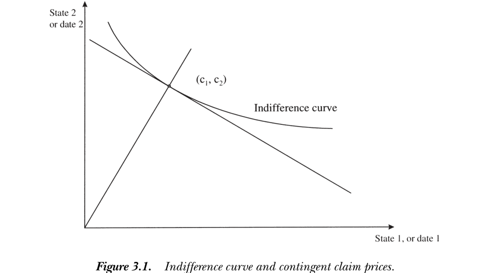
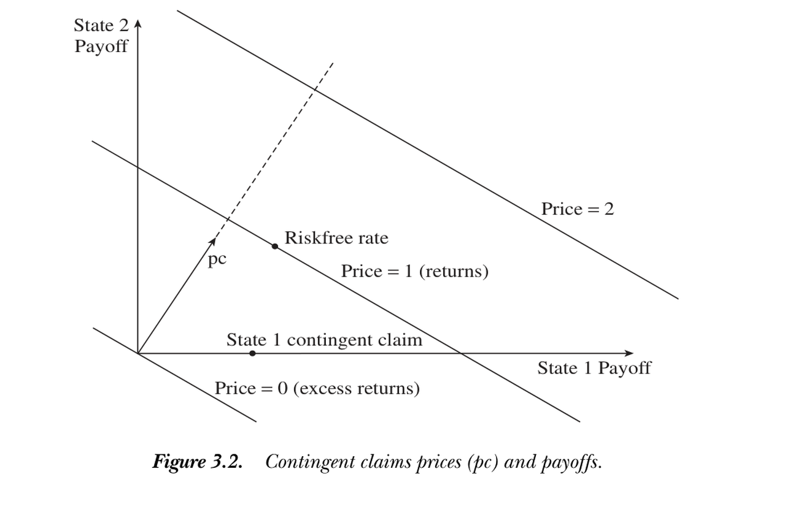

3. Contingent Claims Markets
3. Contingent Claims Markets
本章导读 本章（Cochrane 第 3 章）在最简单的市场结构——或有索取权 (contingent claims) ——下更深入理解 \(p=\mathbb E(mx)\)。在完全市场里，仅由价格与支付即可得到：贴现因子存在、为正、定价函数线性——无需任何效用函数。§3.1 或有索取权与"打包"定价；§3.2 风险中性概率；§3.3 投资者一阶条件（贴现因子 = 边际替代率，图 3.1）；§3.4 风险分担（完全市场下个体消费同步变动，只有总量风险要紧）；§3.5 状态图与内积表示 \(p(x)=\mathbb E(mx)=m\cdot x\)（图 3.2）。
3. Contingent Claims Markets
Overview This chapter (Cochrane Ch 3) understands \(p=\mathbb E(mx)\) more deeply in the simplest market structure — contingent claims. In a complete market, prices and payoffs alone give: a discount factor exists, is positive, and the pricing function is linear — with no utility function needed. §3.1 contingent claims and "bundling"; §3.2 risk-neutral probabilities; §3.3 the investor's first-order conditions (the discount factor is the marginal rate of substitution, Figure 3.1); §3.4 risk sharing (in complete markets individual consumptions move together; only aggregate risk matters); §3.5 the state diagram and inner-product representation \(p(x)=\mathbb E(mx)=m\cdot x\) (Figure 3.2).
3.1 或有索取权 / Contingent Claims
设明天有 \(S\) 个可能状态 \(s\)。或有索取权 (contingent claim) 是只在状态 \(s\) 支付 1 元（或 1 单位消费）的证券，今日价格记 \(p^c(s)\)。完全市场指投资者能买到任意或有索取权——未必显式交易，只需有足够多其他证券去张成它们。一个支付 \(x(s)\) 的资产可看作一篮子或有索取权（状态 1 买 \(x(1)\) 份、状态 2 买 \(x(2)\) 份……），其价格须等于这篮子的价值：
3.1 Contingent Claims
Suppose one of \(S\) states \(s\) occurs tomorrow. A contingent claim is a security paying 1 dollar (or 1 unit of consumption) only in state \(s\), with today's price \(p^c(s)\). A complete market means investors can buy any contingent claim — not necessarily by trading them explicitly, but by holding enough other securities to span them. An asset paying \(x(s)\) is a bundle of contingent claims (\(x(1)\) claims to state 1, \(x(2)\) to state 2, …), and its price must equal the value of that bundle:
$$p(x)=\sum_s p^c(s)\,x(s).\tag{3.1}$$
Cochrane 称之为"开心乐园餐定理"：在无摩擦市场里，套餐的价格应等于一个汉堡 + 一份薯条 + 一杯饮料 + 一个玩具的价格之和。为便于取期望而非对状态求和，把 (3.1) 乘除以概率 \(\pi(s)\)，并定义贴现因子为或有索取权价格与概率之比。
Cochrane calls this the "happy-meal theorem": in a frictionless market the price of a happy meal equals the price of one hamburger + fries + drink + toy. To take expectations rather than sum over states, multiply and divide (3.1) by the probability \(\pi(s)\) and define the discount factor as the ratio of the contingent claim price to the probability.
完全市场中 SDF 存在 = 状态价格 / 概率 / In a complete market the SDF exists = state prices / probabilities \(m(s)=\dfrac{p^c(s)}{\pi(s)}\)，于是打包式 (3.1) 写成期望 \(p=\sum_s\pi(s)m(s)x(s)=\mathbb E(mx)\)。故在完全市场里，\(p=\mathbb E(mx)\) 中的贴现因子 \(m\) 存在，它就是按概率缩放后的或有索取权价格（\(m\times\pi\) 合称状态价格密度）。\(m(s)=\dfrac{p^c(s)}{\pi(s)}\), so the bundling equation (3.1) becomes the expectation \(p=\sum_s\pi(s)m(s)x(s)=\mathbb E(mx)\). Thus in a complete market the discount factor \(m\) in \(p=\mathbb E(mx)\) exists — it is just contingent claim prices scaled by probabilities (\(m\times\pi\) is the state-price density).
3.2 风险中性概率 / Risk-Neutral Probabilities
\(p=\mathbb E(mx)\) 的另一常见变形给出风险中性概率。定义 \(\pi^*(s)\equiv R^f m(s)\pi(s)=R^f p^c(s)\)，其中 \(R^f\equiv 1/\sum_s p^c(s)=1/\mathbb E(m)\)。这些 \(\pi^*(s)\) 为正、不超过 1 且求和为 1，是合法的概率。于是
3.2 Risk-Neutral Probabilities
Another common transform of \(p=\mathbb E(mx)\) gives risk-neutral probabilities. Define \(\pi^*(s)\equiv R^f m(s)\pi(s)=R^f p^c(s)\), where \(R^f\equiv 1/\sum_s p^c(s)=1/\mathbb E(m)\). These \(\pi^*(s)\) are positive, at most 1, and sum to 1, so they are a legitimate set of probabilities. Then
$$p(x)=\sum_s p^c(s)x(s)=\frac1{R^f}\sum_s\pi^*(s)x(s)=\frac{\mathbb E^*(x)}{R^f},\qquad \pi^*(s)=\frac{m(s)}{\mathbb E(m)}\pi(s).$$
即可把资产定价当作"所有人都风险中性、但用 \(\pi^*\) 代替真实概率 \(\pi\)"。\(\pi^*\) 给边际效用 \(m\) 高的状态更大权重——风险厌恶等价于（相对其真实概率）更关注不愉快的状态。\(m\) 可视为从真实测度 \(\pi\) 到风险中性测度 \(\pi^*\) 的测度变换。该表示在衍生品定价、连续时间扩散中尤为常用：连续时间下只需把每个价格过程的漂移增加其与贴现因子的协方差、保持协方差不变即可（离散时间换概率通常同时改变一、二阶矩）。
So one can treat asset pricing as if everyone were risk-neutral but using \(\pi^*\) in place of the true \(\pi\). \(\pi^*\) gives more weight to states with high marginal utility \(m\) — risk aversion is equivalent to paying more attention (relative to true probability) to unpleasant states. \(m\) is the change of measure from the true measure \(\pi\) to the risk-neutral \(\pi^*\). This representation is especially common in derivatives and continuous-time diffusions: in continuous time one just raises each price process's drift by its covariance with the discount factor, leaving covariances alone (in discrete time changing probabilities generally alters both first and second moments).
3.3 再看投资者 / Investors Again
虽然本章重在"不用效用函数"，仍值得在或有索取权框架下重看投资者一阶条件。投资者初始财富 \(y\)、状态相依收入 \(y(s)\)，可购买各状态的或有索取权：\(\max_{c,c(s)}u(c)+\sum_s\beta\pi(s)u[c(s)]\) s.t. \(c+\sum_s p^c(s)c(s)=y+\sum_s p^c(s)y(s)\)。对预算约束引入乘子 \(\lambda\)，一阶条件 \(u'(c)=\lambda\)、\(\beta\pi(s)u'[c(s)]=\lambda p^c(s)\)，消去 \(\lambda\)：
3.3 Investors Again
Although this chapter stresses doing without utility functions, it is worth revisiting the investor's first-order conditions in the contingent-claims setting. With initial wealth \(y\) and state-contingent income \(y(s)\), the investor buys claims to each state: \(\max_{c,c(s)}u(c)+\sum_s\beta\pi(s)u[c(s)]\) s.t. \(c+\sum_s p^c(s)c(s)=y+\sum_s p^c(s)y(s)\). With a multiplier \(\lambda\) on the budget constraint, the FOCs \(u'(c)=\lambda\), \(\beta\pi(s)u'[c(s)]=\lambda p^c(s)\), eliminating \(\lambda\):
$$m(s)=\frac{p^c(s)}{\pi(s)}=\beta\frac{u'[c(s)]}{u'(c)},\qquad\frac{m(s_1)}{m(s_2)}=\frac{u'[c(s_1)]}{u'[c(s_2)]}.$$
配合 \(p=\mathbb E(mx)\) 又得到消费模型。这说明贴现因子 \(m\) 就是日期-状态相依商品间的边际替代率（故和 \(c(s)\) 一样是随机变量）；按概率缩放或有索取权价格即得边际效用，并不像之前看上去那么人为。图 3.1 给出其经济学：观察到投资者的状态相依消费选择后，由效用函数的导数即可反推出导致该选择的或有索取权价格。相关概率是投资者的主观概率（资产价格由需求决定，需求由主观概率决定）；"理性预期"（主观 = 客观频率）是额外假设。
Coupled with \(p=\mathbb E(mx)\) this recovers the consumption model. So the discount factor \(m\) is the marginal rate of substitution between date- and state-contingent goods (hence, like \(c(s)\), a random variable); scaling contingent claim prices by probabilities gives marginal utility, and is not as artificial as it seemed. Figure 3.1 shows the economics: observing the investor's state-contingent consumption choice, the derivatives of the utility function recover the contingent claim prices that led to it. The relevant probabilities are the investor's subjective ones (prices are set by demands, demands by subjective probabilities); "rational expectations" (subjective = objective frequencies) is an extra assumption.

图 3.1：无差异曲线与或有索取权价格。最优状态相依消费 \((c_1,c_2)\) 处，无差异曲线与预算线相切，切线斜率即价格比。
Figure 3.1: Indifference curve and contingent claim prices. At the optimal state-contingent consumption \((c_1,c_2)\) the indifference curve is tangent to the budget line, whose slope is the price ratio.
3.4 风险分担 / Risk Sharing
各投资者的边际替代率都等于同一组或有索取权价格比，故边际效用增长率在所有投资者间相同：
3.4 Risk Sharing
Every investor's MRS equals the same contingent claim price ratio, so marginal-utility growth is equal across all investors:
$$\beta^i\frac{u'(c^i_{t+1})}{u'(c^i_t)}=\beta^j\frac{u'(c^j_{t+1})}{u'(c^j_t)}.\tag{3.2}$$
若投资者有相同的位似效用（如幂效用），则消费本身同步变动 \(\dfrac{c^i_{t+1}}{c^i_t}=\dfrac{c^j_{t+1}}{c^j_t}\)；更一般地，消费冲击在个体间完全相关。这个预测极端到易被误读：它说的不是期望消费增长相等，而是事后消费增长相等——我的消费涨 10%，你的也恰涨 10%。完全或有索取权市场让所有人共担所有风险，任何冲击（保险赔付后）平等地砸向每个人。这是风险分担、非平均主义：富人消费水平更高，但贫富同等承担冲击。该风险分担是 Pareto 最优的（等价于社会计划者 \(\max\sum_i\lambda^i\mathbb E\sum_t\beta^t u(c^i_t)\) s.t. \(\sum_i c^i_t=c^a_t\)，一阶条件 \(\lambda^i u'(c^i_t)=\lambda^j u'(c^j_t)\)）。推论：只有总量风险要紧——真正的个体特质风险被分散，不影响决定资产价格的 \(m\)。现实市场尚不完全（个体消费并不同步），但这揭示了证券市场的功能：通过分担风险拉近个体消费，金融创新的多数动力正是更广地分担风险。
If investors have the same homothetic utility (e.g. power utility), then consumption itself moves in lockstep \(\dfrac{c^i_{t+1}}{c^i_t}=\dfrac{c^j_{t+1}}{c^j_t}\); more generally, consumption shocks are perfectly correlated across individuals. This prediction is so radical it is easily misread: it says not that expected consumption growth is equal, but that ex post consumption growth is equal — if my consumption rises 10%, so does yours, exactly. A complete contingent-claims market shares all risks, so any shock (after insurance) hits everyone equally. This is risk sharing, not socialism: the rich consume more, but rich and poor share shocks equally. The sharing is Pareto optimal (equivalent to a social planner \(\max\sum_i\lambda^i\mathbb E\sum_t\beta^t u(c^i_t)\) s.t. \(\sum_i c^i_t=c^a_t\), with FOC \(\lambda^i u'(c^i_t)=\lambda^j u'(c^j_t)\)). Corollary: only aggregate risk matters — truly idiosyncratic risk is diversified away and does not affect the \(m\) that sets asset prices. Real markets are not yet complete (consumptions do not move in lockstep), but this reveals the function of securities markets: they bring consumptions closer together by sharing risk, and better risk sharing drives much financial innovation.
3.5 状态图与定价函数 / State Diagram and Price Function
把或有索取权价格 \(p^c\) 与支付 \(x\) 看作 \(\mathbb R^S\) 中的向量（每个分量对应一个状态）。由 \(m(s)=u'[c(s)]/u'(c)>0\)，价格向量 \(p^c>0\)、贴现因子 \(m>0\)（在每个状态都为正）。价格即两向量的内积：
3.5 State Diagram and Price Function
View the contingent claim prices \(p^c\) and payoffs \(x\) as vectors in \(\mathbb R^S\) (one component per state). Since \(m(s)=u'[c(s)]/u'(c)>0\), the price vector \(p^c>0\) and the discount factor \(m>0\) (positive in every state). The price is the inner product of the two vectors:
$$p(x)=\sum_s p^c(s)x(s)=p^c\cdot x=|p^c|\times|x|\times\cos\theta.$$
故给定价格的所有支付落在垂直于 \(p^c\) 的（超）平面上（投影相同 ⟹ 内积相同 ⟹ 价格相同）；价格 = 0 的平面（超额收益）严格正交于 \(p^c\)。定价函数 \(p(x)\) 是线性的：\(p(ax+by)=ap(x)+bp(y)\)，等价格平面随价格线性外移、原点价格为零。图 3.2 中：价格 = 1 平面是所有收益，价格 = 0 平面是超额收益，无风险收益位于 45° 线（两状态支付相同）与价格 = 1 平面的交点。把 \(p^c\) 换成 \(m\)、并定义随机变量内积 \(x\cdot y\equiv\mathbb E(xy)\)，几何完全相同——\(\mathbb E(xy)=0\) 即"正交"，"把 \(y\) 投影到 \(x\)"就是回归 \(y=b'x+\varepsilon\)（残差正交 \(\mathbb E(x\varepsilon)=0\)）。推广到无穷维状态空间即 Hilbert 空间 \(L^2\)（有限二阶矩的随机变量），\(p(x)=\mathbb E(mx)\) 仍解释为"\(m\) 垂直于等价格超平面"（Hilbert 空间机制见 Hansen and Richard 1987）。
So all payoffs with a given price lie on a (hyper)plane perpendicular to \(p^c\) (same projection ⟹ same inner product ⟹ same price); the price = 0 plane (excess returns) is strictly orthogonal to \(p^c\). The pricing function \(p(x)\) is linear: \(p(ax+by)=ap(x)+bp(y)\), the constant-price planes move out linearly and the origin has price zero. In Figure 3.2: the price = 1 plane is all returns, the price = 0 plane is excess returns, and the risk-free return sits at the intersection of the 45° line (same payoff in both states) and the price = 1 plane. Replacing \(p^c\) by \(m\) and defining the inner product of random variables \(x\cdot y\equiv\mathbb E(xy)\), the geometry is identical — \(\mathbb E(xy)=0\) is "orthogonality," and "projecting \(y\) onto \(x\)" is the regression \(y=b'x+\varepsilon\) (residual orthogonal, \(\mathbb E(x\varepsilon)=0\)). Generalizing to an infinite-dimensional state space gives the Hilbert space \(L^2\) (random variables with finite second moments), and \(p(x)=\mathbb E(mx)\) still means "\(m\) is perpendicular to constant-price hyperplanes" (for the Hilbert-space machinery see Hansen and Richard 1987).

图 3.2：或有索取权价格 \(p^c\) 与支付。价格向量 \(p^c\) 指向正卦限；等价格线（价格 = 0、1、2）垂直于 \(p^c\) 并随价格线性外移；价格 = 1 平面为收益、价格 = 0 平面为超额收益。
Figure 3.2: Contingent claims prices \(p^c\) and payoffs. The price vector \(p^c\) points into the positive orthant; constant-price lines (price = 0, 1, 2) are perpendicular to \(p^c\) and move out linearly; the price = 1 plane is returns and the price = 0 plane is excess returns.